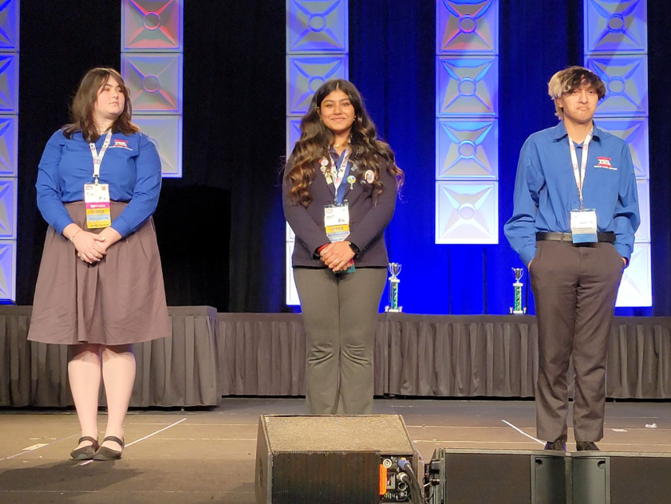

The Technology Student Association was started at South Fayette High School approximately 30 years ago. The current faculty sponsor, Mr. Hausman, took over the club in the 2017–2018 school year. The club was a lot smaller with 11 members, from which 3 competed in nationals. Over the years, more and more people joined.
Mr. Hausman notes how TSA has a family environment, making it unique to other clubs and competitions. Specifically, if you need help with your project or if you are missing something, other competitors are willing to offer help rather than anticipating your failure. As the club grew there were several issues with organization, especially since several students would sign up last minute.
To organize the chaos, there was more paperwork added and eventually an events matrix (excel sheet with all the competitions offered and who is doing them along with other information). Currently the club is currently focusing on expanding as well as encouraging students to pursue officer positions. However a challenge they have come across is how there is only a high school program and not a middle school one as well.

TSA is the largest organization in the South Fayette community and averages around 7 students competing in nationals every year.